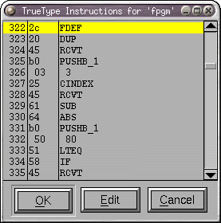
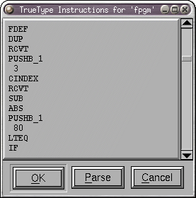

|   |
TrueType の命令づけの機構について説明しようとは思いません。あなたがそれを理解する必要があるならば、上記のリンクを参照してください。 (Microsoft も同様の文書を出していますが、それは Word フォーマットで書かれています)。
このダイアログは、グリフまたは TrueType テーブル (fpgm や prep など) に付随する命令を表示します。マウスカーソルをどれかの命令の上に置くと、その命令を解説する簡単なヘルプメッセージが表示されます。[編集(E)] ボタンを押すと、ダイアログが変更されて、それと同じ命令が編集可能なテキストエリアに含まれた形で表示されます。それらは思うがままに編集することができます。[解析(P)] ボタンを押すと、変更が解析され、(解析が成功すれば)“ヘルプ”モードに戻ります。
MIRP のような命令は FontForge の固有の (しかし少しだけ覚えやすい) スタイルで MIRP[rnd,white] と書くこともでき、MIRP[00110] と書くこともできます。また、PUSHB_1 と書くことも、PUSHB[000]と書くこともできます。
スタック引数を命令と同じ行に含めることができ、FontForge はそれを適切な push 命令に変換します。例えば、
5 SRP0
は
と等価です。PUSHB_1 5 SRP0
式 cvt(<val>) を数値の変わりに用いることもできます。これらは (1 em ユニット以内の誤差で) <val> である項目の‘cvt ’テーブル内のインデックスに置換されます。例えば cvt(100) は、‘cvt ’テーブル内での 100 のインデックスを返します。そのような項目が存在しない場合は、FontForge は項目を作成します。
このダイアログは‘cvt ’テーブルの初期の (‘prep’ プログラムで変更される前の) 内容を表示します。それは単純に符号つき 16 ビット値のリストです。値をクリックして、新しい値を入力することによって任意の値を変更することができます。新しい項目を (最後に) [長さを変更] ボタンを押すことによって変更可能です。
(cvt テーブルを編集するのに、上記の“cvt(<val>)”記法を使うこともできます。)